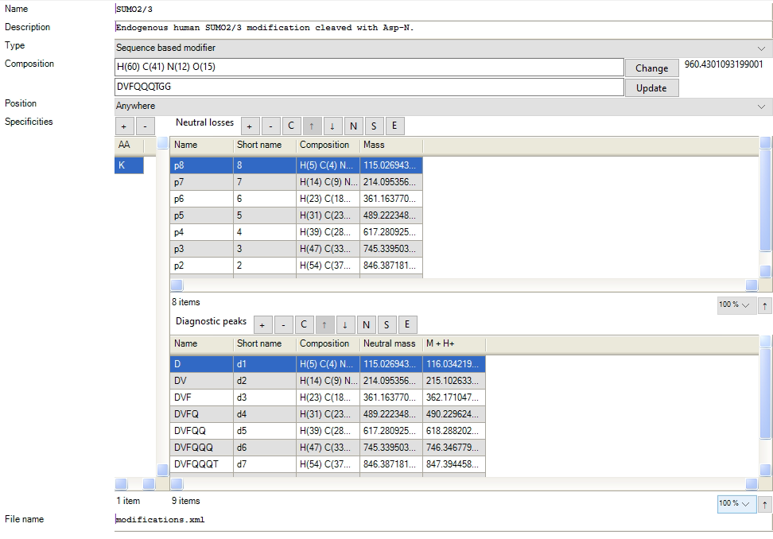
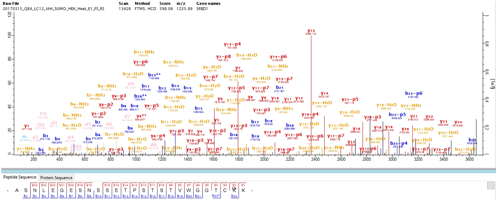

MaxSBM
1 Sequence based modifications - MaxSBM
To enable the detection of peptides containing sequenced based modifications (SBMs), like SUMOylation and ubiquitination, we configured the software to support sequence-based modifications (SBMs) via the “MaxSBM” module. SBMs are only supported for DDA searches. The module enables identification of PTMs based on multiple fragmentation points.
The module is described in detail in Lennartsson et al., 20251.
1.1 Configuration
The configuration of MaxSBM was implemented through the graphical user interface (GUI). The modification configurations are found in the modification list, under the ‘configuration’ tab (Figure 1.).
The MaxSBM module can be activated in MaxQuant and Andromeda by incorporating a variable modification in a search with the modification type ‘sequence based modifier’. For SBMs, fragmentation masses are calculated automatically when prompted a sequence input in the ‘sequence’ box, under “Composition” box (Figure 1.).
 Figure 1. The configurations for including a SBM in a search is done by adding a variable modification with the type “Sequence based modifier” and defining a set of neutral losses and diagnostic ions.
The PTM remainder masses are defined in the list of neutral losses, which the user can remove add to optimize the search. The ions are denoted p-ions, based on their remaining PTM fragment. The mass is defined based on the fragmentation points neutral mass loss. The ions are numbered based on the p-ion numbering, which is defined in the short name. Here the user can modify and add numbering of the ions. The field can also be left blank, where the ions will be numbered iteratively.
SBMs generate in general many diagnostic ions. In MaxQuant, adding these will increase the annotation and peak coverage of the data.
1.2 Search space size
Since the number of added p-ions in the neutral loss list increases the search space substantially, we recommend the addition of these to be limited for increased identification rates.
1.3 Result
After the search is finished, the identified p-ions are shown in the MaxQuant spectral viewer. The identified p-ions are reported with annotation and mass in the ‘msms.txt’ search output table. The MaxSBM output with the complete set of modification identifications are found in the modification output table ’sites.txt’. We recommend analysis with the downstream proteomics analysis platform Perseus.
 Figure 2. An example of identified SUMOylated peptide in the MaxQuant viewer.